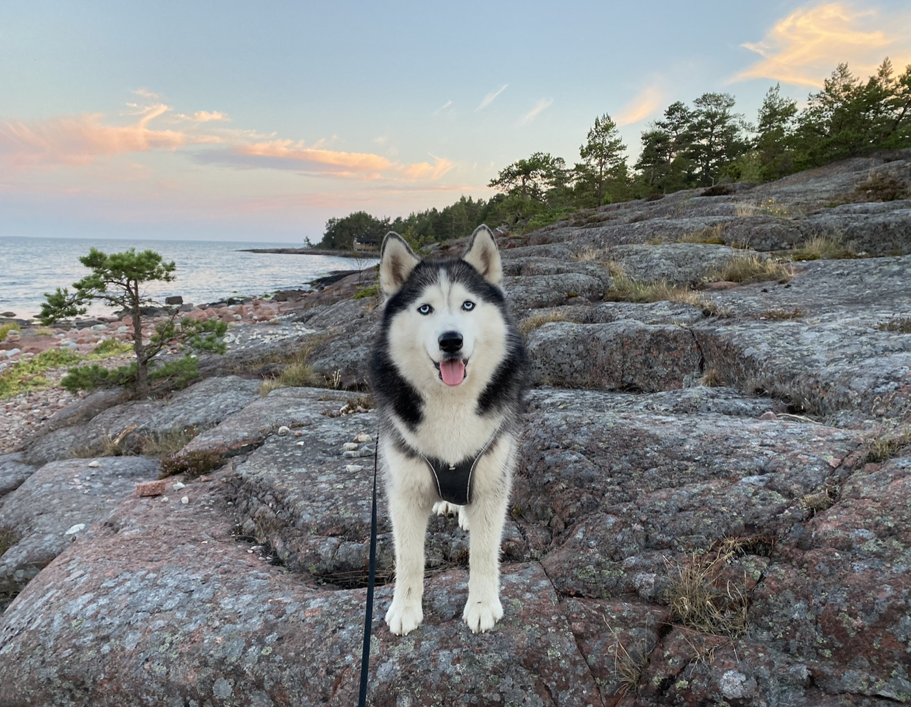
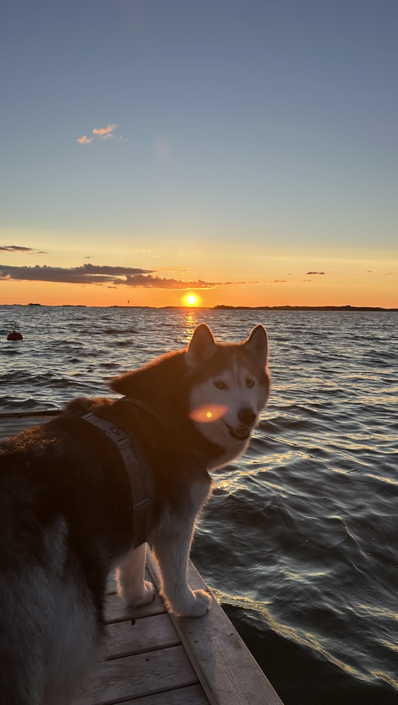
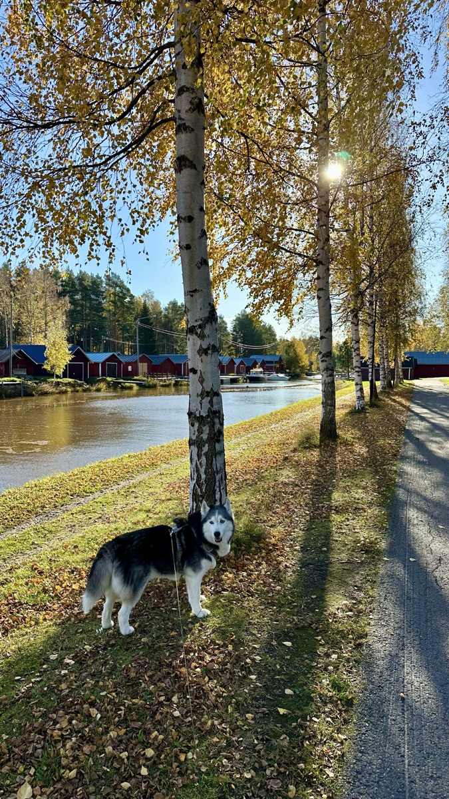
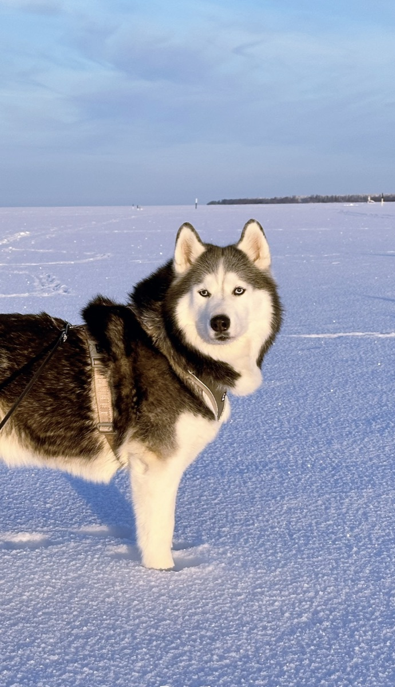
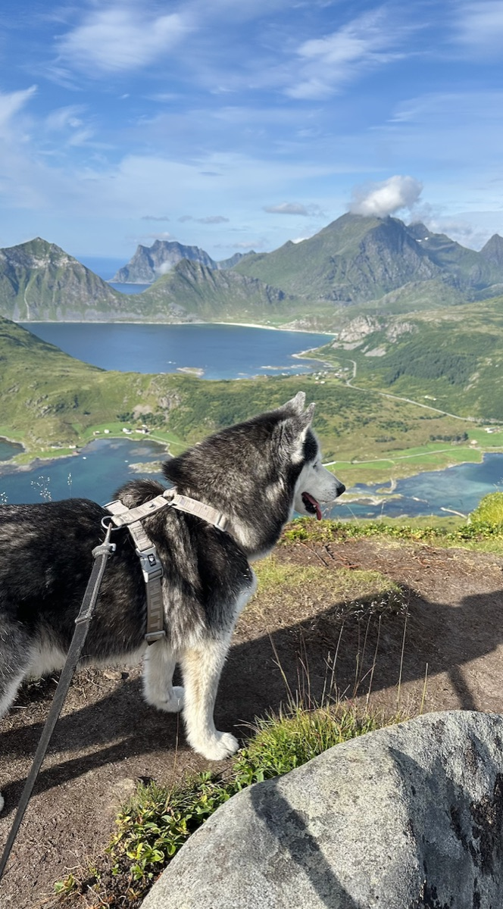
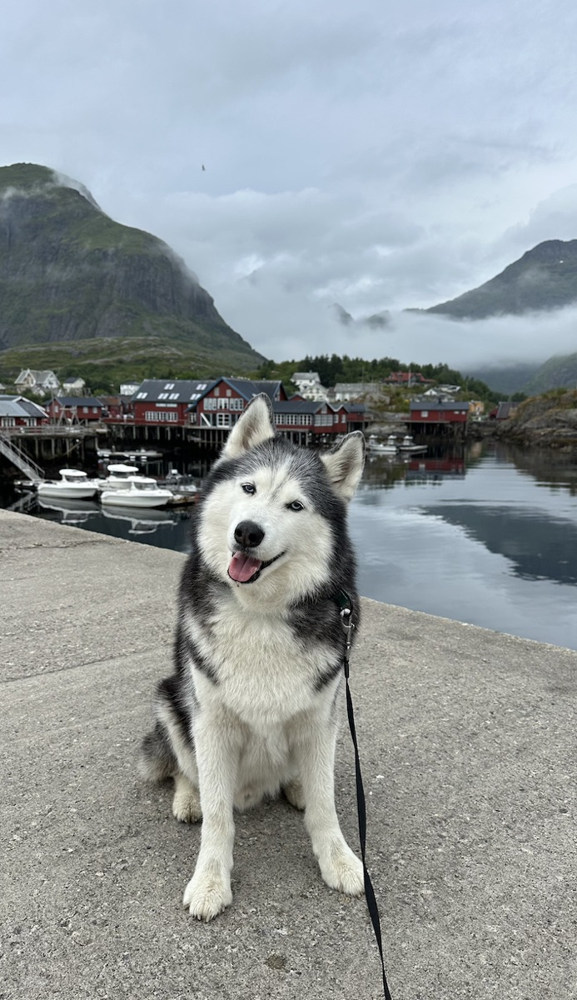

Photos of Damon

Åland Islands. Pink granite rocks, pine trees and a calm evening sea.

Hanko. A summer sunset at the southernmost point of Finland.

Kokkola. Golden autumn birches along the river.

Winter. A walk on the frozen sea, the perfect weather for a husky.

Lofoten. The view from the top of a mountain.

Å, Lofoten. A small fishing village with red houses.